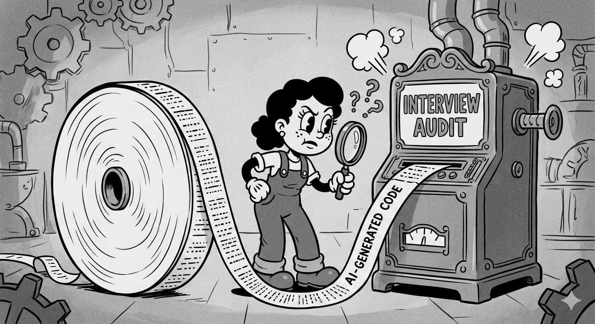
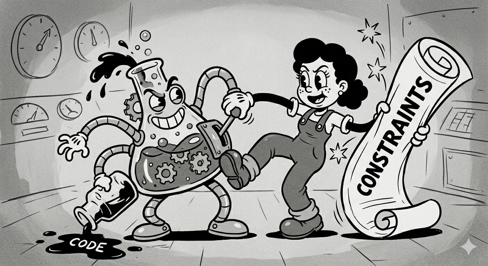
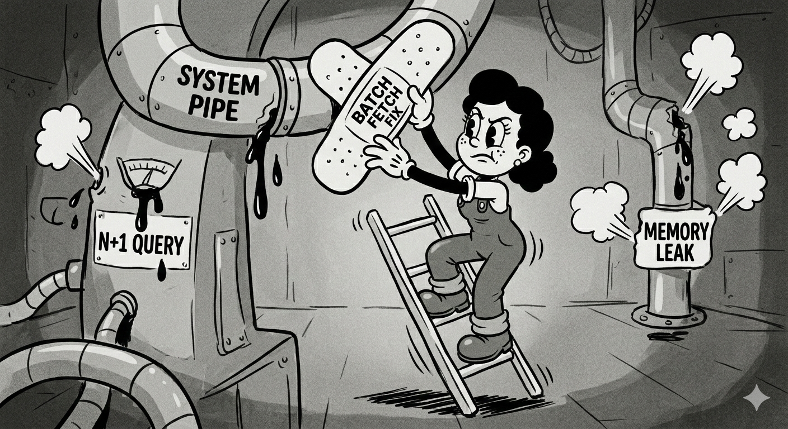

I've spent the last few years deep in the trenches of system design and machine learning infrastructure. Like many of you, I've watched the rise of AI code generators with a mix of awe and professional recalibration. We can no longer pretend it's a distant future. The future of engineering interviews is already here, and the old playbook is worthless.
I recently read an article that perfectly articulated the shift from the employer's perspective: syntax tests are dead, and the "audit interview" is here to stay. They're no longer hiring for typists; they're hiring for auditors.
This is a fundamental shift. As engineers, we can't just show up and write a function anymore. We have to demonstrate judgment. So, how do we, the candidates, prepare for a world where the interviewer hands us a block of AI-generated code and asks, "Why will this fail?"
I've synthesized the core lessons into a preparation guide for engineers at all levels. Whether you're a junior trying to get your foot in the door or a senior looking to command a room, here's how you flip the script and ace the audit.
Forget the Syntax, Focus on the System
The first and most important mental shift is this: your value is no longer in the code you write, but in the problems you prevent. The interviewer doesn't need to see you burn a variable to memory. They need to see you hold the entire system in your head.

Here are the four key dimensions you need to prepare for, which map directly to what hiring managers are now desperately seeking.
1. Verification Depth: Becoming a Professional Skeptic
In the past, you tried to write perfect code. Now, you're being judged on your ability to find the imperfections in almost-perfect code.
How to Prepare: When practicing, don't just stop when your code runs. Adopt a mindset of "what breaks this?" For every function you write or review, ask yourself: What happens when the database latency spikes to 500ms? What happens when we have 10x the data? What happens when two users do this at the exact same time?
The Interview Signal: In the interview, don't just say "this looks good." Point out the hidden N+1 query. Question the in-memory cache that will blow up with 10,000 users. Your goal is to show that "correct" is not the same as "robust."
2. Architectural Reasoning: Zooming Out
AI is a brilliant local-maximum solver. It can write a perfect function for a given input. It is terrible at understanding the global system. Your job is to be the global thinker.
How to Prepare: When you study a piece of code, force yourself to trace the data flow. Where does the input come from? Is it sanitized? What service is it calling? What is the downstream impact of a failure here? Will your retry logic accidentally DDoS another service?
The Interview Signal: When given a piece of code, your first questions shouldn't be about the loop. They should be about the context. "What does the upstream service guarantee about this payload?" or "What's the contract with the downstream API?" You are demonstrating that you see the code as a living part of an ecosystem, not a standalone artifact.
3. Economic Awareness: Thinking Like an Owner
This is the secret weapon of the senior engineer. Every line of code now has a line-item cost. Compute, storage, API calls—it all adds up.
How to Prepare: Start thinking in terms of trade-offs. Is a vector database cool? Yes. Do we need it for 10,000 static items we could store in Postgres for a fraction of the cost? Probably not. Practice articulating these trade-offs. "Option A is faster to market but has a higher operational cost. Option B is cheaper but requires more initial dev work."
The Interview Signal: In an interview, when proposing a solution, explicitly mention the economics. "We could spin up a new microservice, but given the simplicity, extending the existing monolith would be more cost-effective and faster." This shows you treat the company's resources like your own.
4. AI Interrogation Skill: Managing Your Intern
The interviewers expect you to use AI. They are not testing if you can avoid it; they are testing how you use it. Treat it like a brilliant, but incredibly naive, intern.
How to Prepare: Practice prompt engineering with constraints. Don't just ask for a function. Ask for it again, but this time with a memory limit. Ask it to explain its logic so you can verify it. Ask it to identify the potential edge cases it might have missed.
The Interview Signal: When using the AI, narrate your thought process. "Okay, that's a good starting point, but I'm going to ask it to refactor this part to be async." or "I need to double-check its logic on this cache invalidation strategy; it looks suspicious." You are showing the interviewer that you are the one in charge, not the tool.
Your Playbook for the 3-Phase Audit Interview
The article laid out a brutal but effective three-phase interview. Here's how you tackle it as a candidate.

Phase 1: Orientation (Don't Touch the Keyboard!)
The interviewer shows you a dashboard with rising costs or a traffic spike. Your instinct might be to jump in and fix it.
Resist that instinct.
Your Goal: You must orient yourself. Restate the problem. "So, if I understand correctly, our primary constraint right now is rising egress costs, and we need to find the root cause, correct?" This one sentence demonstrates more judgment than an hour of coding. It shows you can prioritize.
Phase 2: The Audit (Read, Reason, and Simulate)
You're given a block of AI-generated Python code that "works." Your job is to be the human firewall.
Your Goal: Slow down. Talk through the code line by line in your head, but out loud. Simulate the execution. "Okay, this function pulls all the users and then loops through them to make an API call for each one. This is a classic N+1 problem. If we have 10,000 users, we're making 10,000 API calls, which explains the latency and potential cost spike." You are being paid for the hesitation and the scrutiny.
Phase 3: The Defense (Prioritize Relentlessly)
They ask you to fix one thing. Just one.
Your Goal: Show triage skills. Do not try to fix the bad variable names and the memory leak and the N+1 query. Pick the one thing that will bring the system down first. "The most critical failure is the N+1 query. It will take down the service in production. I'm going to fix that by implementing a batch fetch. I would log the other issues—the unoptimized data structure and the potential memory leak—as tickets to address in the next sprint." This demonstrates you understand technical debt and how to ship safely.
A Note to My Junior Engineer Friends
Don't read this and feel intimidated. Read this and feel empowered. You don't need 10 years of experience to be skeptical and detail-oriented.
In the past, you had to fight for the chance to have a senior review your code. In this new era, your "apprenticeship" is reviewing the AI's code. Your first job is to be the skeptic. Ask the questions. Wonder about the edge cases. You will learn faster by analyzing high-volume code patterns than you ever did by wrestling with a linter. Your attention to detail is now your most valuable asset.
The future of software development isn't about who can code the fastest. It's about who can reason the deepest. The audit is here. Let's go prove we're up to the task.